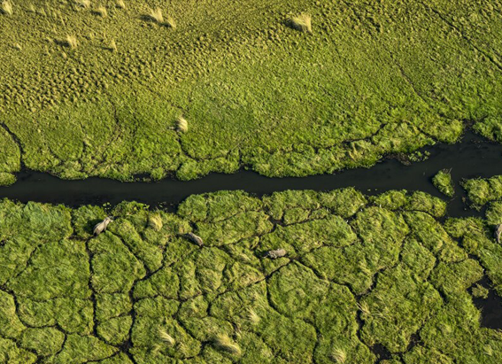
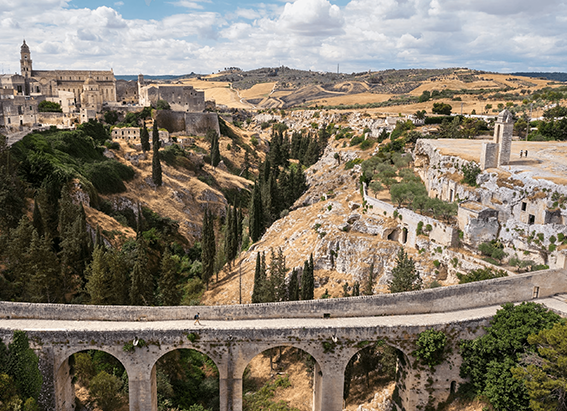

NATIONAL GEOGRAPHIC
800,000 years ago, a huge meteorite hit Earth. Scientists may have just found where.
SCIENCE
In 2011 geologist Kerry Sieh and his husband were shopping in Ho Chi Minh City, Vietnam, when they popped into a little jewelry shop to check out the country’s famous rubies and spinels. But once inside, a set of glassy, black blobs on the wall behind the counter caught Sieh's eye.
“Tektites,” announced the cashier, handing over a photocopied paper that indicated they formed in a mysterious meteorite strike Earth’s last major impact, in fact, a cat astrophic collision that could have been witnessed by ancient human relatives. As Sieh read about a colossal debris field covering 20 percent of the planet’s landmass, from China to Antarctica, he realized a key detail was missing.
“I thought, oh my gosh. How could it be that nobody's found the hole?” Now, a dozen years later, Sieh is convinced he has.
After his jewelry store encounter, Sieh studied the scientific literature and searched satellite images across the region for geological features of interest. He began to suspect that the missing crater, formed some 800,000 years ago, could be in the Bolaven Plateau in southern Laos, buried beneath a young but extensive lava field.
This region is known today for stunning, 300-foot waterfalls and numerous coffee and tea plantations. But Sieh’s latest research, published today in the Proceedings of the National Academy of Sciences, suggests the area had a cataclysmic history. The new study identifies a pattern of thickening ejecta deposits, continuing from the lowlands of southern Laos and eastern Thailand to the center of the plateau itself pinpointing a possible impact site.
These rocky deposits, up to 30 feet thick near the plateau’s center, contain pebble and boulder gravels at their bases, which Sieh believes are the detritus of a land stripping impact blast. The tektites, a type of natural glass formed when meteorites hit sandy surfaces, were found near the tops of these gravels and beneath a thicker ashy deposit, possibly evidence of a giant plume sent skyward by the meteorite strike that later settled over the landscape.
These geologic sequences were recorded and measured at hundreds of sites across a 310-mile-wide region on and around the plateau, revealing a radial pattern of thickening deposits that converges on the plateau center. Sieh describes his case for the Bolaven Plateau as now “all but indisputable.”
“To have a rubbly, poorly sorted deposit made up of stuff we think is from where the crater was, [and] to have it thicken and coarsen toward the source, toward the plateau … offer me some other explanation,” he says.
But not all scientists are yet convinced. Fred Jourdan, a geochronologist at Curtin University in Perth, Australia, who has used chemical clues from the tektites to date the impact to about 788,000 years ago, says Sieh’s proposal is “very well possible,” though he believes the new findings only offer indirect evidence. He says the study is “not a demonstration of the absolute location,” pointing out that many volcanically active places across Southeast Asia also have sandy surface geology that could have produced the tektites in an impact.
Scientists are already proposing return trips to the region, which could confirm beyond doubt whether the plateau of southern Laos is truly the site of Earth’s last great impact.
Shards of impact debris
Tektites, such as the ones in Sieh’s jewelry store, form when fragments of molten material thrown out by a meteorite strike are launched into the air where they solidify and rain back down over a wide area. In the absence of an impact crater, tektite strewn fields provide the next best record of Earth-shattering meteorite strikes.
Jourdan’s 2019 dating of the tektites, found today across much of Australia and Southeast Asia, made it the youngest of Earth’s four major tektite strewn fields. The date fueled speculation that ancient Asian hominins such as Homo erectus could have witnessed the explosive event. While a limited fossil record makes that difficult to prove, this planetary collision was clearly best viewed from afar Jourdan’s analysis showed the tektites formed at temperatures of up to 7,200 degrees Fahrenheit.
Comments :
- john Very good
- john Very good
Leave a Reply
Your email address will not be published. Required fields are marked*
Related posts:
-
5 trips to inspire the whole family in 2023
Wondering where to go next? You’re not the only one. After a frenetic return to travel, many are asking how to enjoy the rush of discovery without the crush of crowds. Our annual list of 25 inspiring
View article -
5 wildly underrated natural escapes for 2023
Wondering where to go next? You’re not the only one. After a frenetic return to travel, many are asking how to enjoy the rush of discovery without the crush of crowds. Our annual list of 25 inspiring
View article -
5 trips to immerse yourself in history and heritage in 2023
Wondering where to go next? You’re not the only one. After a frenetic return to travel, many are asking how to enjoy the rush of discovery without the crush of crowds. Our annual list of 25 inspiring
View article